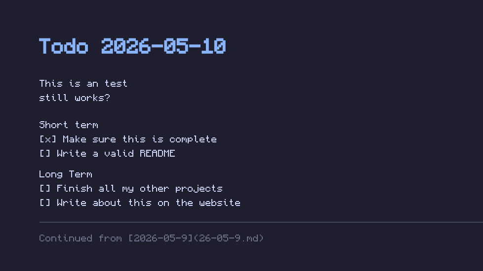
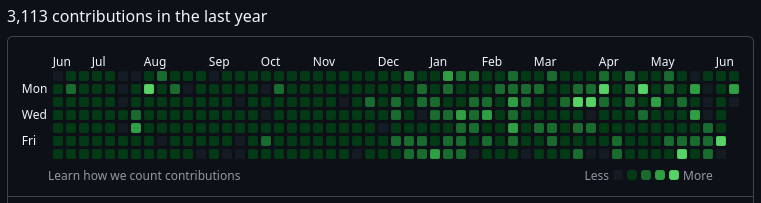

Ink - A daily todo script that opens a dated markdown file in your terminal editor and renders it as your GNOME wallpaper on save. Used as a daily todo list and reminder that work is never done. Written in bash with a Python stdlib renderer

IT-Uppsala-Exams - A sourced public collection of exams given in courses taken in the IT program at Uppsala University. Used to help study and features as of writing over 600 exams from 44 courses
YAGF - Yet-Another-Github-Filler is an automated script designed to artificially increase the amount of commits done thus boosting the users github front page contribution graph. Written as a simple bash script designed using git predating and gh cli to produce pull requests and comments. Also uses cronjobs to automate future commits

eduprint-uu-linux-v1.2 - An updated script to access Uppsala University's printer service eduprint that now works on fedora. Updated from the university's version 1.1